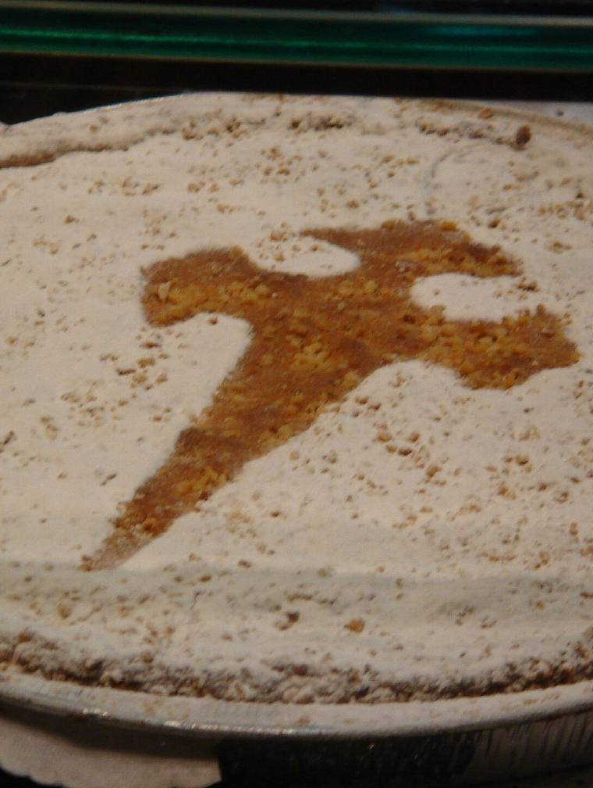

Desserts

Desserts
Tarta de Santiago
Gâteau aux amandes de Compostelle
Préparation : 30 min
Cuisson : 30 min
Ingrédients (pour 8 personnes)
- 250 g d’amandes en poudre
- 250 g de sucre
- 4 œufs
- 1 œuf pour le fond
- 25 g de sucre pour le fond
- farine pour former la pâte (environ deux verres), beurre pour le moule
- zeste de citron, cannelle, sucre glace
Quantités adaptées. Les temps de cuisson ne sont pas recalculés.
- Battre l’œuf du fond avec son sucre, une cuillerée d’eau et de la cannelle.
- Ajouter la farine peu à peu jusqu’à une pâte maniable, l’étaler dans le moule beurré et fariné.
- Fouetter œufs, sucre et zeste jusqu’à mousse, incorporer amandes et cannelle, verser.
- Cuire 25 à 30 minutes à 180 °C.
- Poser une croix de Saint-Jacques en carton, poudrer de sucre glace, retirer la croix.
D’après Spain.info, office espagnol du tourisme. Traduit et reformulé.